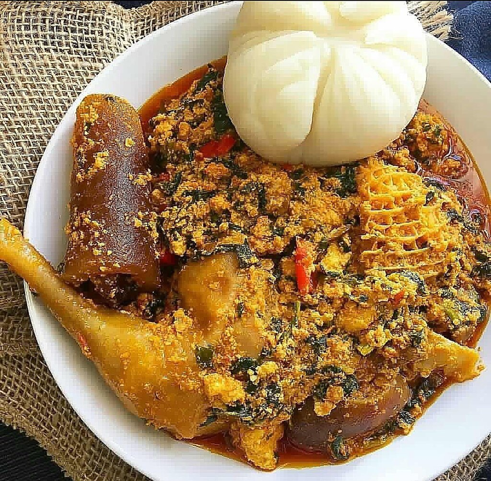
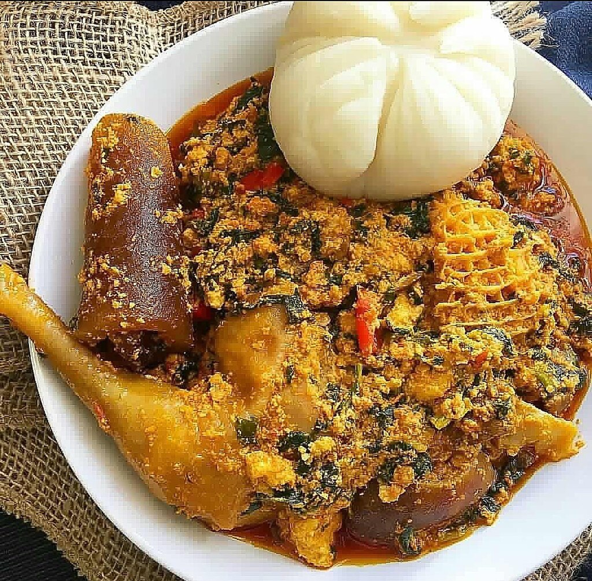

Introduction
My name is Ajayi Becky kehinde but people call me Becky which is more easier to remember.
I was born and brought up in the south-west of Nigeria Ondo-State. I started Primary school I started primary school at the age of 5 and graduated at the age of 9.
Then, I began Junior Secondary school at the age of 10 and finished Senior Secondary school at the age of 15.
Nigeria, over 100 languages are spoken, but the most commonly used ones are English and Pidgin. Nigeria is a very diverse country, so we are grouped into three major ethnic groups with about 250 minor ethnic groups.
major ethnic groups are Yoruba, Igbo, and Hausa-Fulani.
 


The food culture in Nigeria is rich and varied, with a wide array of delicious snacks that are sure to tantalize your taste buds.
Whether you're a traveler looking for something new to try or an adventurous foodie seeking out unique flavors, Nigerian snacks offer something for everyone.
Let's take a look at some of the most popular snacks in Nigeria and explore why they're so beloved by locals and visitors alike.
My Academic Journey and Pursuing International Study
I'm a girl who writes and speaks English fluently. I enjoy listening top music, dancing, and I love reading and watching science documentaries.
My passion for comnputational science grew in my fourth year in secondary school,
and this was evidence in my West Africa Examination Council (WAEC) result where I had a distinction in Mathematics (A1).
Being a science student, I am always fascinated when watching documentaries about computer robotics, Artificial intelligence (AI), information security and data privacy, stock market prediction, cloud computing, and Internet of Things (IOT). I do ponder how these things came to be, more so, their application in our world today. Not too long after I wrote my Senior School Certificate Examination, I stumble on series of documentaries that exposed me to advance technological trends and this solved my curiosity on the real-world application of all I have been watching. The technological trend documentaries showcase autonomous driving through the use of AI computer vision and sensors, Robot-assisted surgery, smart city that is based on IOT, and Blockchain technology used for data security and privacy of cryptocurrencies like BITCOIN. Although I do not fully understand these technologies, their use-cases are crystal clear to me.
As a young girl from a country classified as third world and deficient in advanced technology, we are far behind the developed first-world countries where the aforementioned technological trends are already in place and are being taught in their tertiary institutions. Being one of the top five countries in rising technology, coming to Korea seemed to be the coolest idea that came to mind. Aside from being great tech kings, the country is endowed with beautiful mountains and scenery too. Living costs compared to other first world countries, seemed cheaper and more comfortable.
In my quest to find the most convenient place to study for my undergraduate in Korea, my sister spoke to me about Kangwon National University. I did my research and found that it is a beautiful place that has brought about the development of Chuncheon, capital of Gangwon-do province. Chuncheon has a lot to see and experience. From the naturally beautiful Samaksan which has an amazing view of the city to the Animation Museum which has fun and amazing technological things to experience. In addition, to fuel my passion for KNU I figured the Department of computer science has been in existence since 1984 with awesome and recent technologies including artificial intelligence (AI), virtual reality, Internet of things (IoT) and other relevant computing technologies that I have passion for. My friend also got into KNU not long ago and I came across the KNU meta-verse version which left me wowed; so I made up my mind to join the great minds behind this wonderful innovation in the department of Computer science KNU.
My Journey and Adventures.
Welcome to my journey through Korea, where I had the opportunity to immerse myself in the country's rich culture and heritage. Join me as I share some of the memorable experiences and adventures I encountered during my stay.
Taekwondo Experience
Embarking on the path of Taekwondo was a transformative journey that taught me invaluable lessons in discipline, resilience, and self-improvement. Graduating with a blue belt symbolized not only my dedication to the art but also my deep appreciation for Korean martial arts and traditions. Through rigorous training and unwavering determination, I gained not only physical strength but also mental fortitude, shaping me into a more disciplined and focused individual.
Exploring the Seoul National Museum
Step into the Seoul National Museum, where history comes to life and the vibrant tapestry of Korean culture unfolds before your eyes. As I wandered through the museum's halls, I was captivated by the vast collection of artifacts and exhibits, each offering a glimpse into Korea's storied past. From ancient relics to contemporary artworks, the museum provided a fascinating journey through the annals of Korean history, deepening my appreciation for the country's rich cultural heritage.
Discovering the Garden of Morning Calm
Nestled amidst the serene landscapes of Gapyeong lies the Garden of Morning Calm, a tranquil oasis of natural beauty and botanical splendor. Walking through the meticulously landscaped gardens, adorned with vibrant floral displays and tranquil ponds, I was transported to a realm of serenity and wonder. The annual lighting festival, with its dazzling illumination and enchanting ambiance, transformed the garden into a magical wonderland, leaving an indelible impression on my heart and soul.
Exploring the DMZ
Journey to the heart of the Korean peninsula with a visit to the Demilitarized Zone (DMZ), a symbol of both division and hope. Organized by Chuncheon City Hall, this eye-opening excursion offered a glimpse into the complex history and geopolitical tensions of the Korean peninsula. Standing at the border between North and South Korea, I was struck by the stark contrast between the two worlds, yet inspired by the resilience and determination of the Korean people to seek peace and reconciliation.